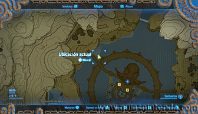
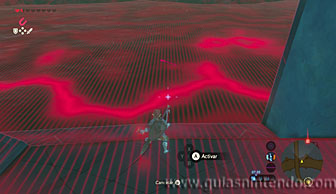
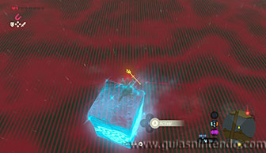
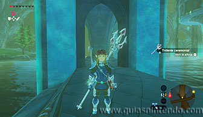
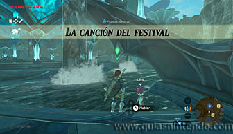
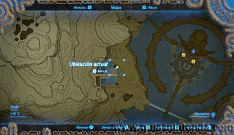
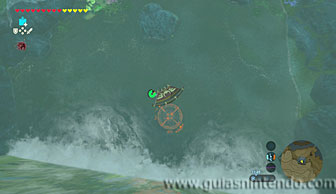
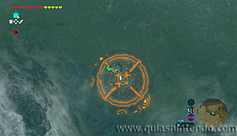
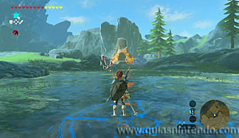
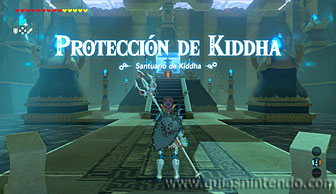

Se encuentra en la región de la torre de Lanayru, pero no podrás acceder a este santuario hasta que no hayas completado la Misión principal de la Bestia divina de esta zona. Cuando lo hagas tendrás que localizar bajo el agua el tridente ceremonial. Mira la localización en el mapa y encuéntralo usando el módulo imán.

Para acercarte a él debes usar bloques de hielo y después el imán para ponerlo en tierra firme y poderlo coger.

Ahora habla con una niña zora llamada Lairta (si la niña está dentro del agua y no habla contigo, es porque no has hablado primero con el rey tras derrotar a la Bestia divina de la zona). Cuando hables con ella comenzará una prueba heroica: La canción del festival. Ahora tendrás que ir a la Cascada de Xera, al oeste de la región zora.

Una vez allí sube la cascada usando la armadura zora y después planea en línea recta hacia el pedestal rojo. El objetivo es usar el tridente ceremonial para golpear ese pedestal justo en el centro (debes usar el arma solo cuando estés a poca distancia del pedestal, si caes desde muy arriba perderás vida). Así completarás la prueba heroica.

Cuando lo hagas, el pedestal se volverá azul y aparecerá justo enfrente de la cascada la entrada del santuario. Entra en su interior y abre el cofre que contiene una Rupia plateada, después podrás caminar hacia el altar.
